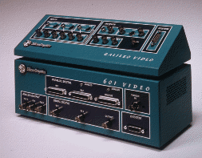
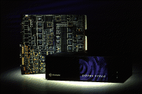

Silicon Graphics har alltid tatt hensyn til brukerene som ønsker video inn eller
ut fra arbeidsstasjonene, og leverer et godt utvalg av video løsninger.
Indy Video er et kvalitets vidokort som er tilgjengelig på en Indy.
Det er identisk med Indigo2 Video kortet og kan knyttes sammen med
Cosmo Compress kortet (JPEG kompressjon).
Inputs :
Outputs :
Indigo2 Video er et kvalitets vidokort som er tilgjengelig på en Indigo2.
Det er identisk med Indy Video kortet og kan knyttes sammen med
Cosmo Compress kortet (JPEG kompressjon).
Inputs :
Outputs :

Galileo VideoGalileo Video er det beste vidokortet som er tilgjengelig på en Indigo2.
Forskjellen på Galileo Video og Indigo2 Video er at Galileo kortet støtter Betacam kvalitet og kan utvides med et CCIR 601 enhet.
Inputs :
Outputs :

Sirius VideoSirius Video er det kraftigste vidokortet som er tilgjengelig på markedet i dag
og benyttes i Onyx arbeidsstasjoner.
Inputs :
Outputs :
Cosmo Compress er et JPEG kompresjonskort som sammen viedokortene kan JPEG komprimere video fra videokamera/videospiller til disk med 30 frames/s.
Komprimeringen kan utføres fra 4:1 til 100:1 uten at ytelsen reduseres. Man kan komprimere etteller to felt pr frame.
Oppdatert, 6. juni 1995